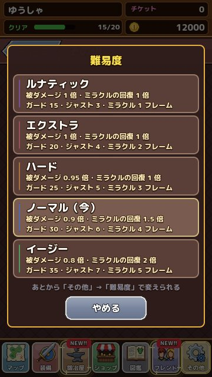

難易度 5 段階のちがい
イージーからルナティックまで、5 つの難易度でガードの受付と被ダメージがどう変わるかを一覧にしました。 更新：2026-11-13
5 つの難易度
難易度はゲームを始めるときに選び、あとから「その他」→「難易度」でいつでも変えられます。変わるのは、敵から受けるダメージ、ミラクルガードの回復量、ガードの受付の長さです。敵の HP や手に入る品は変わりません。
| 難易度 | 被ダメージ | ミラクルの回復 | ガード | ジャスト | ミラクル |
|---|---|---|---|---|---|
| イージー | 0.8 倍 | 2 倍 | 35 | 7 | 5 |
| ノーマル | 0.9 倍 | 1.5 倍 | 30 | 6 | 4 |
| ハード | 0.95 倍 | 1 倍 | 25 | 5 | 3 |
| エクストラ | 1 倍 | 1 倍 | 20 | 4 | 2 |
| ルナティック | 1 倍 | 1 倍 | 15 | 3 | 1 |
ガード・ジャスト・ミラクルの数字は受付の長さで、単位はフレーム（1 秒 = 60 フレーム）です。

どれを選べばいい？
はじめて遊ぶなら ノーマル がおすすめです。ジャストガードの受付が 6 フレーム（0.1 秒）あるので、合図をよく見ていれば十分に決められます。アクションゲームが苦手な人や、物語と装備集めを楽しみたい人は イージー にすると、ミラクルの回復が 2 倍になって、ずっと気楽に進められます。
ハード 以上は、ガードに慣れた人向けです。とくに ルナティック のミラクルガードは 1 フレーム、つまり当たる瞬間ちょうどでしか決まりません。討伐の記録には難易度も残るので、腕だめしにどうぞ。
途中で変えても大丈夫
難易度を変えても、持ち物や進み具合はそのままです。むずかしいボスのときだけイージーにして、終わったらノーマルにもどす、という遊び方もできます。気軽に切りかえて、自分にちょうどいい手ごたえを探してください。
数字で見る受付の長さ
ノーマルのガードの受付 30 フレームは、およそ 0.5 秒です。これは「!!」を見てから押すには十分な長さですが、ミラクルの 4 フレームは 0.07 秒ほどしかありません。ミラクルガードは「狙って決める」というより、「当たる瞬間に合わせる練習を続けると、自然に決まるようになる」ものだと考えてください。
ルナティックのミラクルは 1 フレーム、つまり 60 分の 1 秒です。ここまでくると、画面の表示や指の感覚まで含めた勝負になります。設定のガードの補正を使って、自分の機種に合わせておくのがおすすめです。
難易度と手に入る品
難易度を変えても、宝箱から出る品やコインの量は変わりません。イージーで遊んでも損をすることはないので、物語を楽しみたいときは気軽に下げてください。プロフィールの討伐の記録には、そのとき遊んでいた難易度が一緒に残ります。強いボスをルナティックで倒した記録は、フレンドにも見てもらえます。